Edenn
Identité graphique du tiers-lieu Edenn — Espace de coopération et d'expérimentation à la nature urbaine,
situé dans le quartier des Trois Cocus à Toulouse
et qui réunit une dizaine de structures autour de l'alimentation et de l'agriculture urbaine.
Projet réalisé avec Léa Sefsaf.
Identité graphique et site web, réalisés en novembre 2021 : www.edenn-toulouse.fr
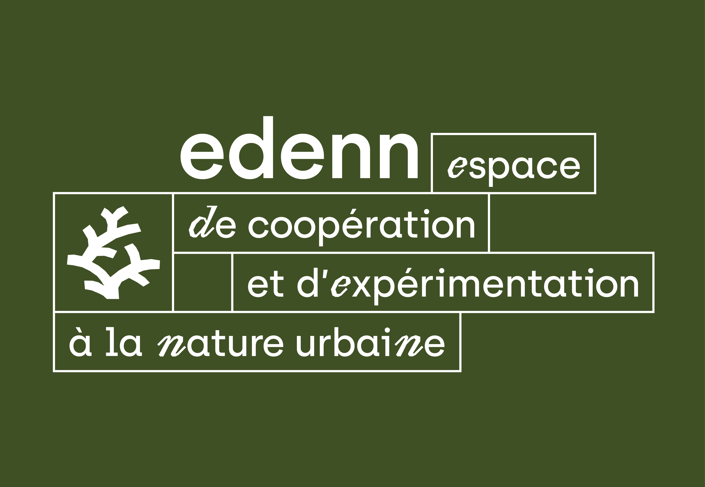
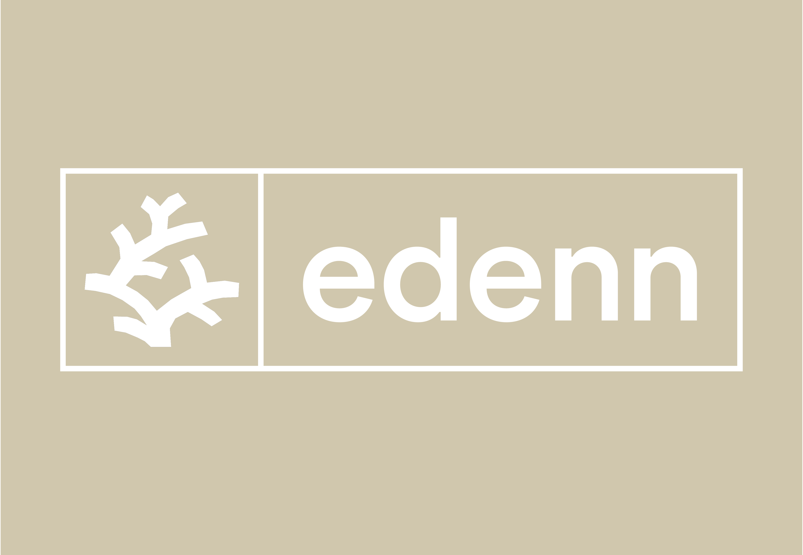
 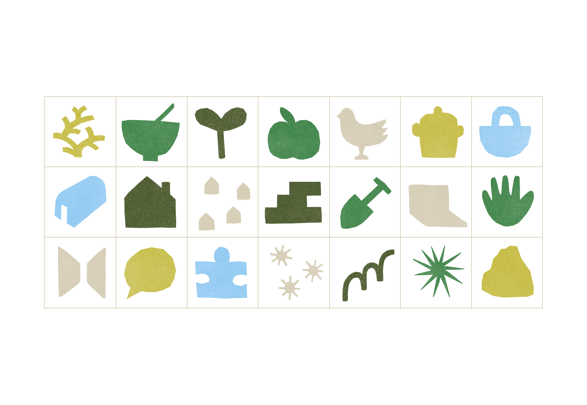
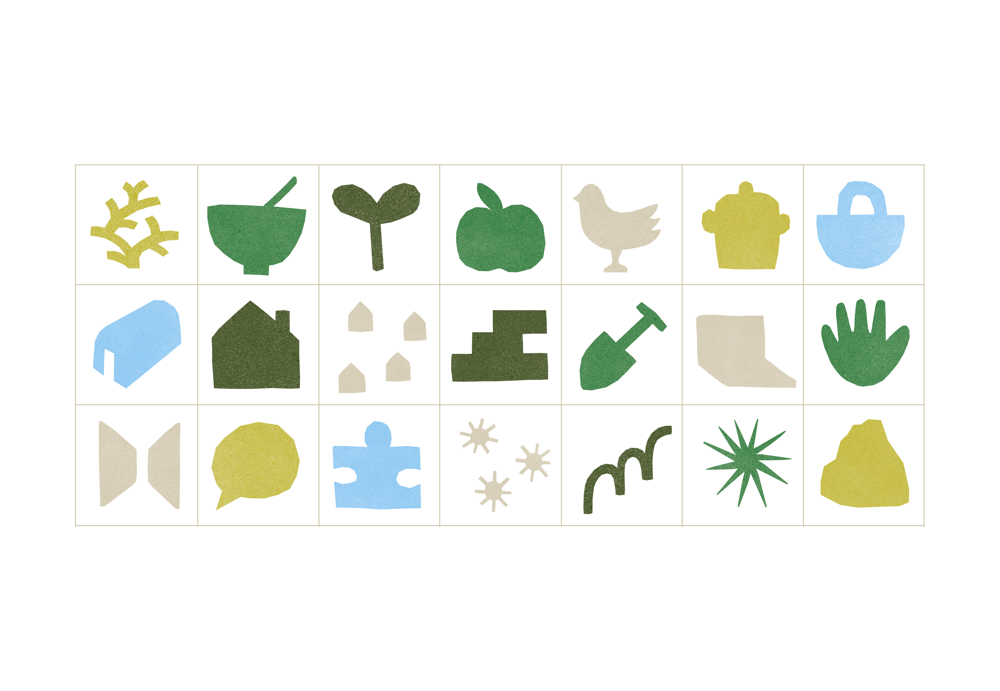


 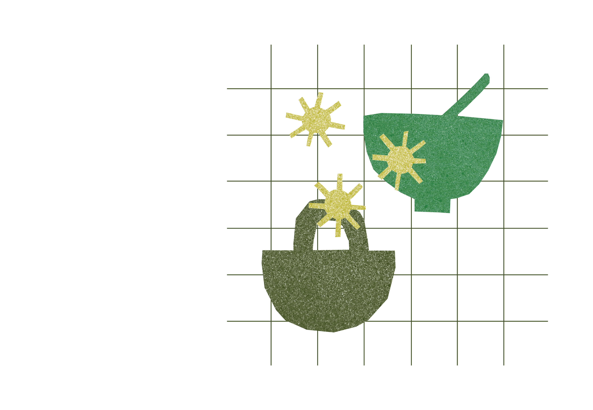
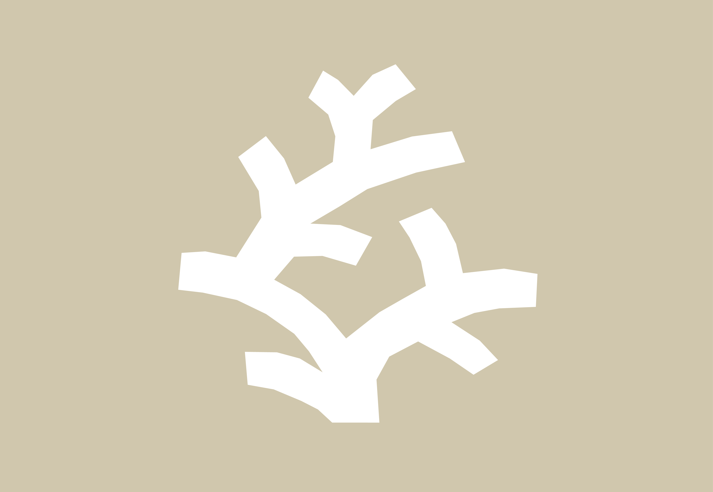
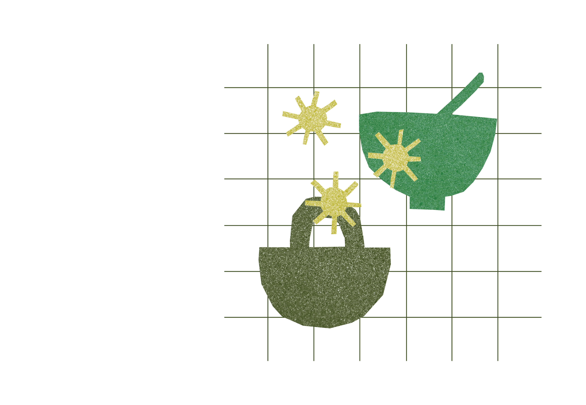
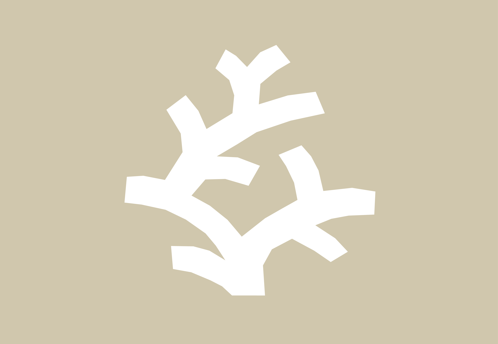
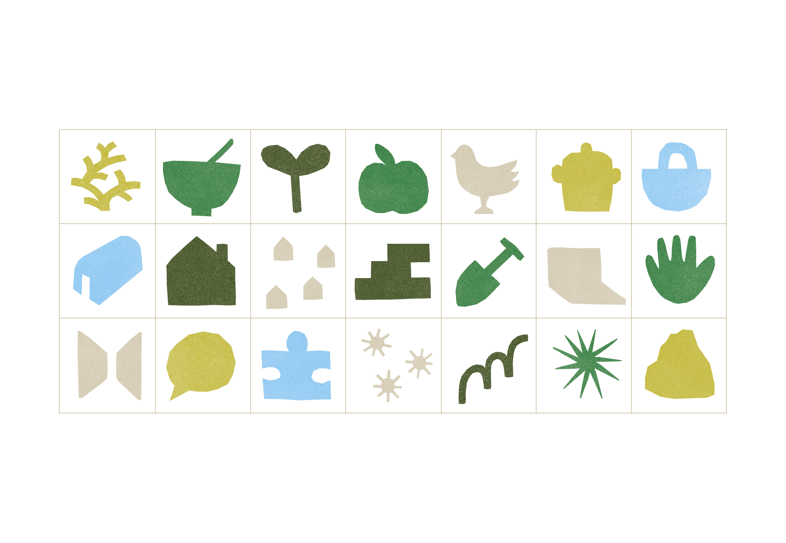
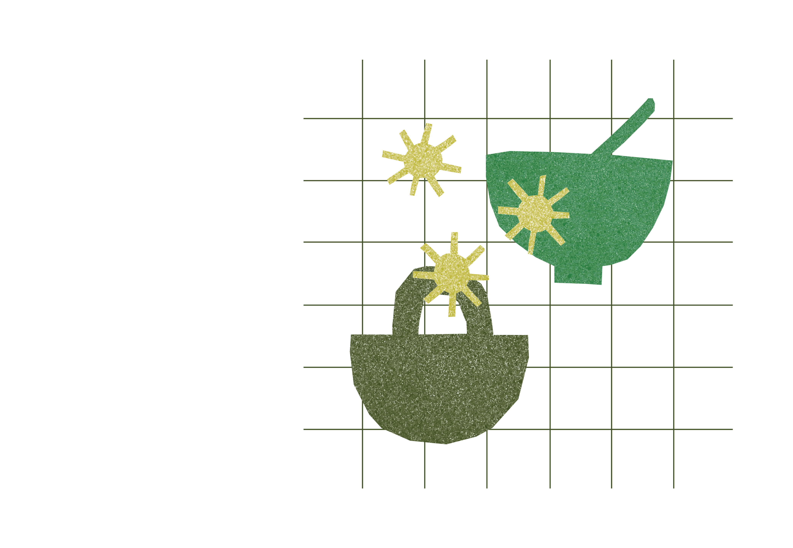
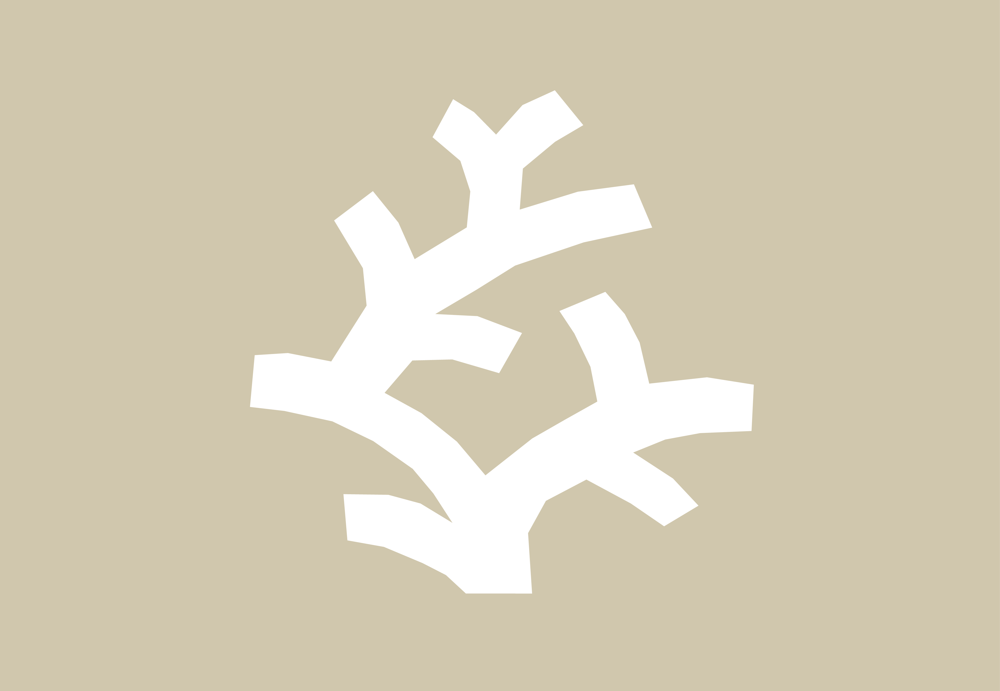